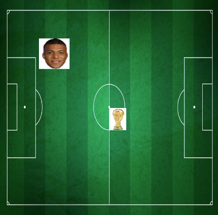
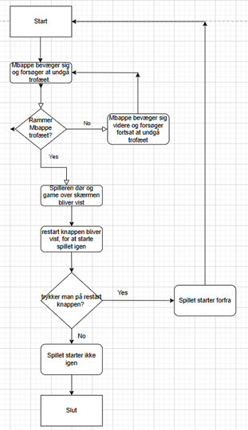

Spil, Leg og Samarbejde
Tilbage til Hovedsiden
Gruppe: Julie og Jens
Redegørelse af vores spil
Vi har lavet en spil der går ud på at undgå et objekt for at undgå at dø. Vi har taget udgangspunkt i fodbold og brugt Mbappe som den fodboldspiller der skal undgå objektet. Vi har brugt VM-trofæet som det objekt Mbappe skal undgå, og hvis han rammer VM-trofæet så dør man i spillet. Når man dør bliver man sendt til game-over skærmen. Herfra kan man starte spiller forfra. Nedenunder ses en visuel repræsentation af vores spil. Her kan vi både se VM-trofæet, Mbappe og baggrunden.

Kan spilles af to eller flere personer, der fysisk er i nærheden af hinanden
Vores spil kan spilles af to spillere ved at at en spiller styre hvorvidt mbappe bevæger sig til venstre samtidig med at den anden spille styrer om mbappe skal bevæge sig til højre.
Det er ikke muligt for mere end to spillere at spille spillet på samme tid. Dog kan man danne to eller tre hold med to spillere på hvert hold. Således kan holdene dyste om hvem der kan holde sig i live i længst tid.
Involverer et samarbejdende eller konkurrerende element, gerne inspireret af sport.
Om man spiller alene eller sammen med en anden for at spille spillet så er det konkurrende ellement at man gerne vil forbedre sin tid - den tid man er i live i spillet. Og hvis man er i hold så er det konkurrende element at man gerne vil have en bedre tid end de andre hold. På den måde vil spillere stræbe efter at holde sig i live i længere tid for at dystre med de andre.
Styres med Makey Makey og ikke direkte fra computeren.
Vi koblede to stykker papir med aluminiumsfolie på sammen med vores makey makey og brugte disse to stykker papir til at styre hvilken vej vores spiller skulle gå. Hvis man trykkede på det stykke papir til højre rykkede Mbappe til højre og hvis man trykkede på det stykke papir til venstre rykkede spilleren til venstre. Vi placerede vores stykker papir med god afstand fra hinanden for at få spilleren til at bevæge sig så meget som muligt når vedkommende spillede vores spil, for at få noget mere bevægelse ind i det.
Lav et rutediagram over spillet.

Liste over ting I vil ændre på baggrund af brugertesten.
Vi ville fjerne det hvide baggrund rundt om VM-trofæet og Mbappe for at spillet ser mere æstetisk ud. Derudover ville vi tilføje en timer som starter når spillet går i gang og som stopper når spillet er slut. Således kan man se præcist hvor længe man overlevede uden at dø. Dette ville fremme konkerence elementet ved at spillerne nemmere ville kunne sammenligne deres tider. Vi kunne også have tilføjet flere trofæer så det blev sværrere at undvige "dræber-objekterne". Vi kunne således også have tilføjet at Mbappe kunne bevæge sig op og ned på skærmen. Lige nu er han begrænset til kun at bevæge sig til højre og venstre. Vi kunne i den forbindelse så også tilføje at trofæerne ville komme fra siderne af skærmen og ikke blot oppefra. Dette ville gøre spillet sværere og dermed bliver en høj tid mere atraktivt. Dermed ville disse sidste ændringer gøre at spillere ville stræbe sig yderligere for at få en højere tid.